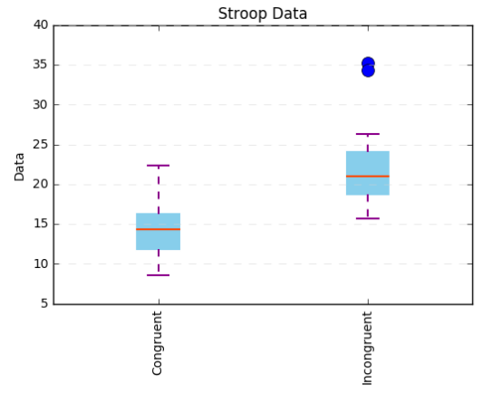
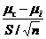
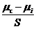
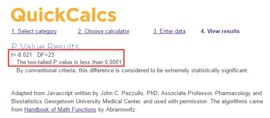

相关资料：
参考网站1：https://zh.wikipedia.org/wiki/斯特鲁普效应
参考网站2：http://wiki.mbalib.com/zh-tw/Stroop效应
项目内容：
1. 我们的自变量是什么？因变量是什么？
自变量：文字与颜色是否一致
因变量：参与者说出文字颜色的时间
2. 此任务的适当假设集是什么？你想执行什么类型的统计测试？为你的选择提供正当理由。
 是指文字颜色一致时，人们说出文字颜色所需要的时间的总体均值，是指文字颜色不一致时，人们说出文字颜色所需要的时间的总体均值。
是指文字颜色一致时，人们说出文字颜色所需要的时间的总体均值，是指文字颜色不一致时，人们说出文字颜色所需要的时间的总体均值。
零假设： >=
>= 或
或 -
-  >= 0，即：文字颜色不一致时，人们说出文字颜色的时间平均会比文字颜色一致时所需要的时间更短或相等。
>= 0，即：文字颜色不一致时，人们说出文字颜色的时间平均会比文字颜色一致时所需要的时间更短或相等。
对立假设： <
< 或
或 -
-  < 0，即：文字颜色不一致时，人们说出文字颜色的时间平均会比文字颜色一致时所需要的时间更多。
< 0，即：文字颜色不一致时，人们说出文字颜色的时间平均会比文字颜色一致时所需要的时间更多。
我将要执行单尾t检验。因为本次任务的数据集是2个相依样本，而且我们不知道总体的 μ 和 σ，此时就不能使用z检验，而要使用t检验。而且根据所给到的数据集，不一致样本中的数值都比对应的一致样本的数值要大，所以可以做出零假设和对立假设分别为：>= 和
和 <
< ，对于这个假设集，只需要单尾t检验即可。
，对于这个假设集，只需要单尾t检验即可。
3. 报告关于此数据集的一些描述性统计。包含至少一个集中趋势测量和至少一个变异测量。
Congruent组 样本平均数： = 14.051 样本标准偏差：= 3.559
= 14.051 样本标准偏差：= 3.559
Incongruent组 样本平均数：= 22.016 样本标准偏差：= 4.797
均值差异，也就是 -
-  的差异点估计： = - = -7.965
的差异点估计： = - = -7.965
差异的标准偏差：S = 4.865
4. 提供显示样本数据分布的一个或两个可视化。用一两句话说明你从图中观察到的结果。

箱线图可以粗略地看出数据是否具有有对称性，分布的分散程度等信息，特别可以用于对几个样本的比较，在这里选择使用箱线图来比较两个样本的数据，使用Python绘制箱线图，从图中可以看出：
（1）文字颜色一致时的样本，四分位间距较小，值域较大
（2）文字颜色不一致的样本，四分位间距较大，值域较小，存在异常值。
比较两个样本的分布信息，文字颜色一致的样本分布更离散。
5. 现在，执行统计测试并报告你的结果。你的置信水平和关键统计值是多少？你是否成功拒绝零假设？对试验任务得出一个结论。结果是否与你的期望一致？
 -
-  的差异点估计： -7.965 差异的标准偏差：S = 4.865 样本量 n = 24
的差异点估计： -7.965 差异的标准偏差：S = 4.865 样本量 n = 24
t-统计值：t =  = -8.021
Cohen's D =  = -1.637
使用 α = 0.01，置信区间水平为98%，查询t表格，得到自由度为23时，t-临界值 = -2.5
置信区间是：（-20.127, 4.197）
根据在线计算P值的工具，计算出结果如下，P值小于0.001：

由于t-统计值落在了临界区内，所以我们可以得出结论，在 α = 0.01 水平下，我们成功拒绝零假设，即当文字颜色不一致时，人们读出正确颜色所需要的时间显著增加。
最终得出的结论与期望一致。
6. 可选：你觉得导致所观察到的效应的原因是什么？你是否能想到会取得类似效应的替代或类似任务？进行一些调查研究将有助于你思考这两个问题！
我觉得导致这个效应的原因在于，当文字的颜色和文字本身含义所代表的含义不一致时，对参与者的判断会产生干扰，使得反应时间变长，导致说出颜色会有所迟疑。
可以取得类似效应的替代任务（不是自己想到，而是通过查询相关资料得知）：用数字与其个数之间的匹配关系为材料，制定2组对照组实验，一组是数字数量与数字本身含义一致（比如 1，22，333等），一组则不一致（比如 111，2222，33 等），也可以体现出Stroop效应。